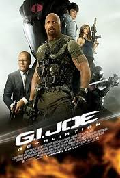
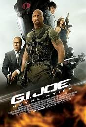

•Independent sound design, recording and mixing since 2005
•Pro-Tools, stereo, 5.1 surround, TV / radio broadcast and web mixing
•Mixing Engineer at One Union Recording Studios in San Francisco, CA (since 2005)
•Audio Engineering Student at Berklee College of Music in Boston, MA (2002-2004)
•Pro-Tools, stereo, 5.1 surround, TV / radio broadcast and web mixing
•Mixing Engineer at One Union Recording Studios in San Francisco, CA (since 2005)
•Audio Engineering Student at Berklee College of Music in Boston, MA (2002-2004)
 •Independent, orignal and creative film scoring and mixing since 2005
•Independent, orignal and creative film scoring and mixing since 2005•Guitar, keyboards and all kinds of sample and synthesizer programming
•Jazz Composition and Arranging Student at Berklee College of Music in Boston, MA (2002-2004)
- The X-Kids
Summer Camp
User registration and PayPal API - FunZap!
Photo Sharing Application
Social Game - Chess
JavaScript Game
Play Against Computer - JavaScript Racing
Educational game
Frame Animation - The Illness
Rock Band Site
Cool CSS Tricks - Cherushii
Solo Artist Site
Custom Admin Interface
•Stack Exchange Profile
•Chief programmer and web developer at The X Kids
•Mac/PC/Linux, Apache, MySQL, HTML5, CSS3, JavaScript, and PHP since 2011
•Online education from Harvard
I make fun, noisy toys! They are all analog electronic synthesizers built from those parts they sell in the very back of Radio Shack. I'm inspired by the DIY electronics community and I just love making insane little gadgets:

Original music composed, performed and produced by Matthew Zipkin:
- Escapism
Magical guitar rock
- Yahoo Flourish
Funky acid vibe
- Sony Bloggie
Light electronic
- Stranger Danger
Nasty electronic
- Crush
Cinematic drama
- Platinum
Heavy rock action
Original music composed, performed and produced with Matthew Zipkin:
- The New Time
Solo Electronic Downtempo
Prodcuer - The Illness
Progressive metal
Guitar - Melting Butterflies
Mellow electronic
Guitar, Charrango - Space Traveling
Nostril HairsDubby trip hop
Guitar - The Bad Hand
Instrumental rock
Rhodes, Melodica
- Precise Device
Jazz Funk Hip-Hop Jam Band
Guitar
All spots mixed for television broadcast by Matthew Zipkin:
- 2012 Television Commercial Reel
I am honored to have worked with the following talented people:
Metallica:
Through The Never
ADR with Lars Ulrich, James Hetfield, Kirk Hammett
Fruitvale Station
Skywalker Sound
ADR with multiple cast
 G.I.Joe: Retaliation
Paramount
ADR with actor Jonathan Pryce
Warehouse 13
Sci-Fi
ADR with actress Emily Bergl
Dexter
Showtime
ADR with actor Yassim Bay (aka Mos Def)
Trauma
NBC
ADR with actors Cliff Curtis, Derek Luke, Anastasia Griffith, Aimee Garcia, Kevin Rankin, Taylor Kinney
Dirty Jobs
Discovery Channel
Voice-Over with host Mike Rowe
Extremely Loud & Incredibly Close
Warner Brothers
VO & ADR with actor Thomas Horn
Get Him To The Greek
Universal Pictures
ADR with actor Lars Ulrich
Punkin Chunkin
Discovery Channel
VO with hosts Jamie Hyneman, Adam Savage, Kari Byron, Tory Belleci, Grant Imahara
iGenius
Discovery Channel
Voice-Over with hosts Jamie Hyneman, Adam Savage
Priest
Screen Gems
ADR with actress Madchen Amick
Pancho Villa
ADR & Voice-Over with actress Gabriela Canudas
For more recent work, see my blog on my homepage
Through The Never
ADR with Lars Ulrich, James Hetfield, Kirk Hammett
Fruitvale Station
Skywalker Sound
ADR with multiple cast
 G.I.Joe: Retaliation
Paramount
ADR with actor Jonathan Pryce
Warehouse 13
Sci-Fi
ADR with actress Emily Bergl
Dexter
Showtime
ADR with actor Yassim Bay (aka Mos Def)
Trauma
NBC
ADR with actors Cliff Curtis, Derek Luke, Anastasia Griffith, Aimee Garcia, Kevin Rankin, Taylor Kinney
Dirty Jobs
Discovery Channel
Voice-Over with host Mike Rowe
Extremely Loud & Incredibly Close
Warner Brothers
VO & ADR with actor Thomas Horn
Get Him To The Greek
Universal Pictures
ADR with actor Lars Ulrich
Punkin Chunkin
Discovery Channel
VO with hosts Jamie Hyneman, Adam Savage, Kari Byron, Tory Belleci, Grant Imahara
iGenius
Discovery Channel
Voice-Over with hosts Jamie Hyneman, Adam Savage
Priest
Screen Gems
ADR with actress Madchen Amick
Pancho Villa
ADR & Voice-Over with actress Gabriela Canudas
For more recent work, see my blog on my homepage
Sound design and final mix by Matthew Zipkin:
- Cicada Princess
Puppet fantasy fable
- Escapism
Motorcycle adventure
- StrumSchool.com
Web video
- Stranger Danger
Guns and action
- Crush
Wordless romance
- Platinum
Fight scenes
All bands recorded and mixed by Matthew Zipkin:
- Tracing Figures
Alternative rock
- The Illness
Progressive metal
- Easystreet
Fun dance, Itali-disco
(music video) - Easystreet
Funky dance
- The Bad Hand
Instrumental rock
Sound design and final mix for these films by Matthew Zipkin:
- Cicada Princess
Childrens story
- Bert
Surreal fable
- Closets
Ghost / Horror
- Kilo
Cop drama / comedy
- Owned
Gritty crime drama